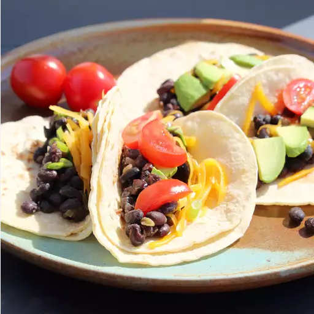

Black Bean Tacos

A filling vegetarian dish that can be prepared with ease
Black bean tacos are a cheap, yet filling dish that can be prepared with ease.
Both prep time and cook time are quick for this dish, so you can make a tasty meal in no time for vegans, vegetarians, and non-picky meat eaters!
Ingredients
- 1 tbsp olive oil
- 1 small onion, chopped
- 1 (15 ounce) can black beans, rinsed and drained
- 1 (7 ounce) can green salsa (salsa verde)
- 1/2 teaspoon garlic powder
- 1/2 teaspoon chili powder
- 1/2 teaspoon ground cumin
- 6 tortillas (Optional)
- 2 ounces shredded Mexican cheese blend (Optional)
- 1 tomato, diced (Optional)
- 1 avocado, sliced (Optional)
- 1 cup shredded lettuce (Optional)
Steps
- Heat olive oil in a saucepan over medium-low heat; cook onion in hot oil until tender, about 5 minutes. Stir black beans, green salsa, garlic powder, chili powder, and cumin with the onion. reduce heat to low and cook the mixture at a simmer until it thickens, 5 to 10 minutes.
- While mixture simmers, layer tortillas between damp paper towels and microwave on low to medium power to steam tortillas to preferred texture.
- Serve in tortillas with Mexican cheese blend, tomato, avocado, and shredded lettuce.